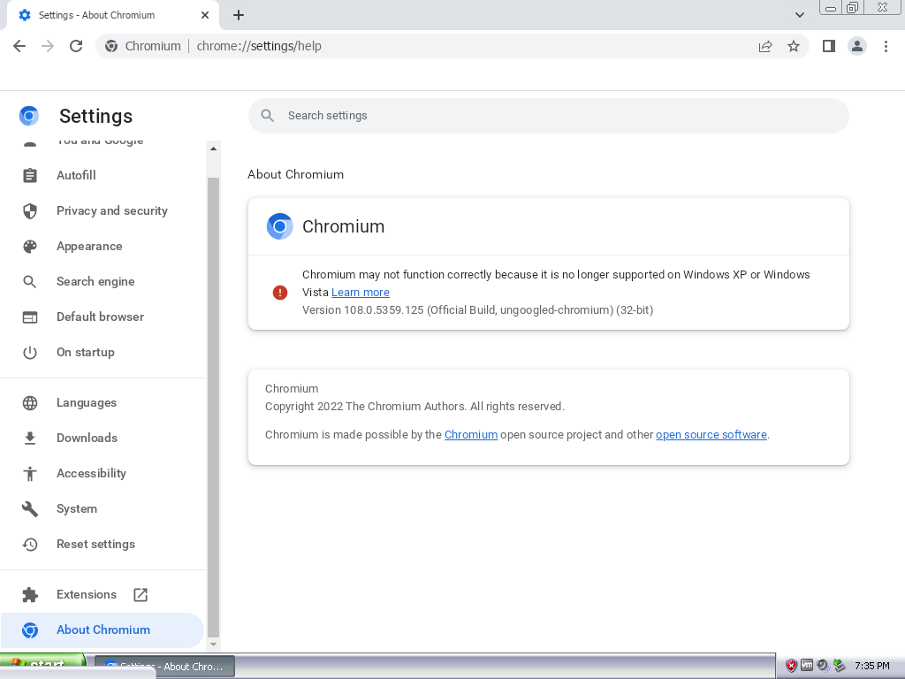

Chrome 108 on Windows XP
If you don't know yet, a few months ago, people at the Windows XP community managed to run Chromium 108 on Windows XP! The progress with Chromium is still very early after so much time, however it is still nonetheless surprising! This is all done using One-Core-API, it is a kernel extension made by Skulltrail192, and it lets you run newer applications. Unfortunately, it doesn't run Firefox 108 yet :(.
Thankfully the installation of One-Core-API is rather simple, all you have to do is download One-Core-API from here and follow the download instructions from the same page.

As beautiful as this tool sounds, it is rather very broken. It is known to break some applications, which is a bit ironic because this tool is supposed to make newer programs run, and not break older ones. It does not also work on some hardware and hypervisors because of some changes it makes. VirtualBox was known to not work for sometime. Also when launching Chrome, you will see a crash message, but the browser works anyway. Before running it you will need to add --no-sandbox (which is needed too for browsers based on it) to the run parameters for your browser.
Speaking of the original announcement of One-Core-API supporting Chrome 100, no one believed it! Just because of how broken this tool was. It was later found out that the tool could only do Chromium (and Chrome) on 32 bit systems, 64 bit system could only go as far as Chrome 75 unfortunately. Still farther than before gotta say, and I have used slightly earlier versions of Chrome and they still worked fine, so that is not a problem for sure! You have 360 Extreme Explorer that is Chromium 86 under the hood, so it doens't make sense to use 75 though.
Not only does Chrome 108 and Chromium 108 work, but also some browsers based on Chromium. From what I know, Microsoft Edge and Brave also work, so we miss out on less browsers now than we used to.
It is very interesting, to me, that we go through all this just for old releases of Windows, I love it <3
I hope to see such beautiful stuff for older Windows as usual! :3
Sorry for a super looooooooooong lack of pages, I'm sorry ;-;. I just don't have much ideas for this interesting website that I have made. I hope to make more pages next year, hopefully a more calm year too! However don't worry, I might actually make some pages this year too! I don't know for sure. See ya!